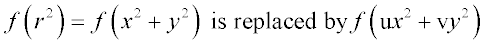

Modifies surfaces to make a cylindrical or anamorphic surface.
Syntax
ASYM u v
| Option | Description |
|---|
| u v | scale factors |
Remarks
- Allows the creation of a more general class
of surfaces such as anamorphic OPTICAL surfaces.
-
Can be used after TUBE, OPTICAL, TORUS, REVOLUTION, HORN, CARTOVAL ,
AXICONIC, BICONIC, CONDUIT, and SUPERCONIC
commands to essentially distort the rotational symmetry of the surfaces. For
example, if Z is the axis of symmetry, the surfaces are only a function
of the distance from the axis squared:

-
Performs the above replacement so that a more general class of surfaces is
possible such as anamorphic OPTICAL surfaces. For example:
OPTICAL Z 2.8 3.7 ! radius of curvature in X = 3.7
ASYM 1 3.7/4.6 ! radius of curvature in Y = 4.6
- Set either u or v to zero so that a surface with cylindrical symmetry becomes an
infinite trough in the nonzero direction.
ASYM Examples